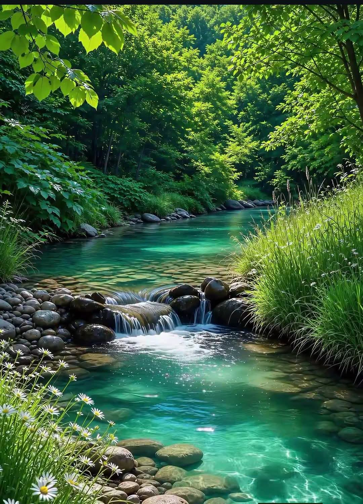

Jernih dan Tidak Keruh
Air tidak menunjukkan kekeruhan berlebihan atau banyak partikel yang terlihat.
MENGENAL AIR BERSIH
Pelajari pengertian air bersih, ciri-cirinya, sumber air, dan pentingnya air bersih bagi kesehatan.
Pelajari Lebih LanjutMengenal air bersih sebagai bagian penting dari kehidupan sehari-hari.

Air bersih adalah air yang memenuhi persyaratan kualitas sesuai dengan peruntukannya sehingga dapat digunakan untuk berbagai kebutuhan.
Kualitas air perlu diperhatikan dari kondisi fisik, kimia, dan mikrobiologisnya. Air yang terlihat jernih belum tentu bebas dari mikroorganisme atau zat berbahaya.
Oleh karena itu, menjaga sumber air dan memastikan kualitasnya sangat penting untuk mendukung kesehatan manusia dan lingkungan.
Kenali karakteristik air yang baik dan pentingnya menjaga kualitasnya.
Air tidak menunjukkan kekeruhan berlebihan atau banyak partikel yang terlihat.

Air tidak menunjukkan perubahan warna yang mencurigakan akibat zat tertentu.

Air tidak memiliki bau tidak wajar yang dapat mengindikasikan masalah kualitas.

Air perlu memenuhi persyaratan fisik, kimia, dan mikrobiologis sesuai penggunaannya.
Mengenal berbagai sumber air yang dapat dimanfaatkan setelah memenuhi persyaratan kualitas.

Air yang tersimpan di dalam tanah dan dapat dimanfaatkan melalui sumur.

Air tanah yang keluar secara alami ke permukaan dan perlu dijaga kebersihannya.

Air permukaan yang dapat diolah terlebih dahulu sesuai kebutuhan.

Air yang dapat ditampung dan diolah sesuai persyaratan kualitas penggunaannya.
Air dari sumber alami tidak selalu aman untuk langsung diminum. Kualitas air perlu diperiksa dan pengolahan mungkin diperlukan.